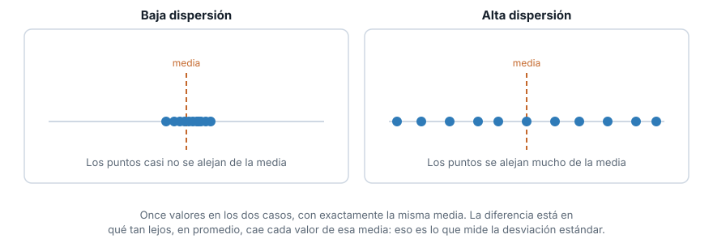
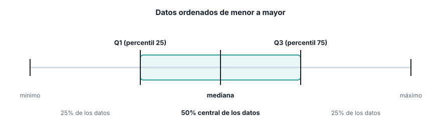
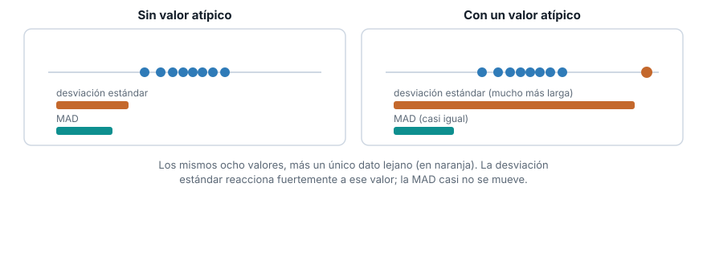
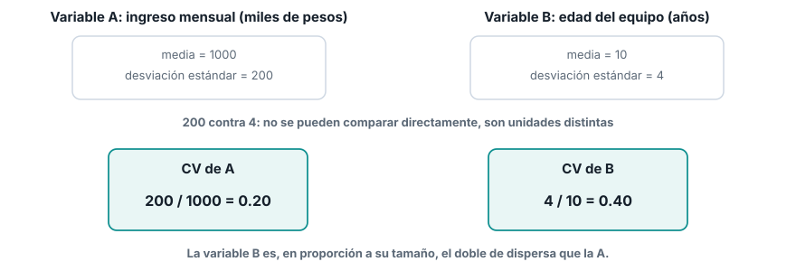
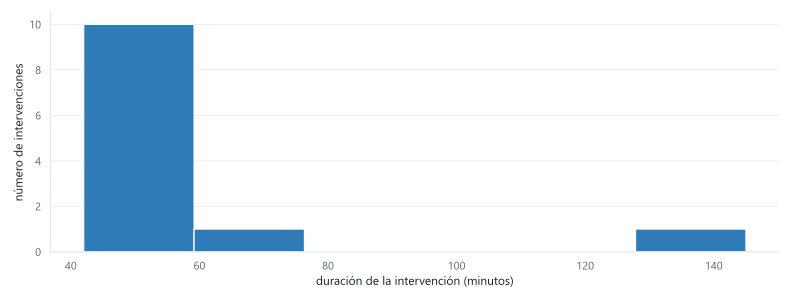

Estadística para Analítica
Localización, dispersión y tablas de frecuencia
Institución Universitaria Pascual Bravo
Ruta de la sesión
Bloque 1
Localización
- Media
- Mediana
- Media truncada
- Moda
Bloque 2
Dispersión
- Varianza y desviación estándar
- IQR
- MAD
- Coeficiente de variación
Bloque 3
Distribución completa
- Tabla de frecuencias
- Histograma
Los datos de hoy
Doce tiempos de intervención de mantenimiento, en minutos. No es un DataFrame: es una lista de Python, tal cual la vas a recibir.
Una de esas intervenciones tomó muchísimo más tiempo que las demás.
La regla del juego
Nada de .mean(), .median(), .std(), numpy, scipy ni statistics.
Para cada concepto vas a ver primero la fórmula. Después la vas a implementar tú, en Python puro, usando solo:
sum(),len(),sorted(),min(),max()- bucles, comprensiones de lista, condicionales
Al final de cada bloque comparamos tu implementación con una posible solución, y la interpretamos.
Bloque 1
Localización
La media
La estimación más simple de un valor típico: suma todos los valores y divide entre cuántos son.
\[ \bar{x} = \frac{\sum_{i=1}^{n} x_i}{n} \]
Es sensible a todos los valores por igual, incluido el más extremo.
¿Qué significa la media?
Es el tiempo que le tocaría a cada intervención si repartieras el tiempo total de mantenimiento en partes exactamente iguales entre las doce.
Ninguna intervención dura necesariamente ese tiempo: es un promedio matemático, no el tiempo real de ningún caso. Sirve para calcular totales (tiempo total del mes = media por número de intervenciones), pero puede engañar si la usas para describir “cuánto dura normalmente una intervención”.
Implementen la media
Escriban una función media(datos) que reciba la lista tiempos y devuelva la media, usando solo sum() y len().
Tienen unos minutos. Después revisamos juntos.
Una implementación posible
La mediana
Ordena los valores de menor a mayor y toma el valor central. Con \(n\) par, promedia los dos valores centrales.
\[ \text{mediana} = \begin{cases} x_{\left(\frac{n+1}{2}\right)} & \text{si } n \text{ es impar} \\[4pt] \dfrac{x_{\left(\frac{n}{2}\right)} + x_{\left(\frac{n}{2}+1\right)}}{2} & \text{si } n \text{ es par} \end{cases} \]
¿Qué significa la mediana?
Ordena las doce intervenciones de más corta a más larga y párate justo en el medio. La mitad de las intervenciones duró menos que ese valor, y la otra mitad duró más.
No le importa si la intervención más larga duró 100 minutos o 1000: su posición en el orden sigue siendo la misma. Por eso es la medida que mejor responde “¿cuánto dura normalmente una intervención?” cuando hay casos extremos de por medio.
Media y mediana, bajo sesgo

Cuando la cola se estira hacia valores altos, la media queda por encima de la mediana. Es exactamente lo que le pasa a tiempos, por la intervención de 145 minutos.
Implementen la mediana
Escriban mediana(datos). Ordenen la lista con sorted() y decidan qué hacer según si len(datos) es par o impar. Con tiempos, \(n = 12\): es par.
Una implementación posible
La media truncada
Ordena los valores, descarta una proporción fija \(p\) de cada extremo, y promedia lo que queda.
\[ \bar{x}_{\text{tr}} = \frac{\sum_{i=p+1}^{n-p} x_{(i)}}{n - 2p} \]
Con trim=0.1 y \(n=12\): \(p = \lfloor 12 \times 0.1 \rfloor = 1\). Se descarta 1 valor de cada extremo.
¿Qué significa la media truncada?
Es como el promedio de una competencia de clavados, donde se descartan la nota más alta y la más baja de los jueces antes de promediar, para que un juez sesgado no manipule el resultado.
Aquí se descarta la intervención más corta y la más larga antes de promediar las diez restantes. Es un punto intermedio entre la media (usa todos los valores) y la mediana (solo mira la posición central): reduce la influencia de un caso extremo sin ignorarlo por completo.
Implementen la media truncada
Escriban media_truncada(datos, proporcion). Ordenen, calculen p, y usen slicing de listas (lista[p:n-p]) para quedarse con el tramo central.
Una implementación posible
Las tres, juntas
| Medida | Resultado |
|---|---|
| Media | 58.5 |
| Media truncada (10%) | 51.5 |
| Mediana | 50.5 |
La media queda 8 minutos por encima de la mediana. Una sola intervención (145 minutos) es responsable de esa diferencia: sin ella, las tres estarían mucho más cerca.
¿Y la moda?
El valor que más se repite. En tiempos, el 48 aparece dos veces; ningún otro valor se repite.
Revelado y discusión
Dos repeticiones en doce datos no es una señal fuerte. Con una variable numérica continua, la moda casi nunca es la medida que conviene reportar.
Bloque 2
Dispersión
Varianza y desviación estándar
\[ s^2 = \frac{\sum_{i=1}^{n} (x_i - \bar{x})^2}{n - 1} \qquad\qquad s = \sqrt{s^2} \]
Eleva al cuadrado cada distancia a la media, así que un valor lejano pesa mucho más que uno cercano.
¿Qué significa la desviación estándar?
Te dice, en promedio, qué tanto se aleja una intervención del tiempo típico. Es la regla de bolsillo para decir “esta intervención fue normal” o “esta intervención fue rarísima”.
La varianza, en cambio, casi no se interpreta sola: queda en “minutos al cuadrado”, una unidad que no significa nada intuitivo. Existe como paso matemático hacia la desviación estándar, no como un número para reportar.
Qué se ve cuando cambia la dispersión

Misma media en los dos casos. La desviación estándar es lo que distingue un grupo del otro.
Implementen varianza y desviación estándar
Escriban varianza(datos), reutilizando la función media que ya escribieron. Después, desviacion_estandar(datos) a partir de la varianza.
Una implementación posible
Percentiles e IQR
El percentil \(P\) es el valor tal que aproximadamente el \(P\)% de los datos queda por debajo. El IQR es la diferencia entre el percentil 75 y el percentil 25:
\[ \text{IQR} = Q_3 - Q_1 \]
Para calcular un percentil por interpolación lineal sobre la lista ordenada, con posición \(pos = P \times (n-1)\):
\[ \text{percentil}(P) = x_{(\lfloor pos \rfloor)} + \left(pos - \lfloor pos \rfloor\right) \times \left(x_{(\lfloor pos \rfloor + 1)} - x_{(\lfloor pos \rfloor)}\right) \]
¿Qué significa el IQR?

El IQR es el ancho de esa banda central: si te quedas solo con la mitad de las intervenciones que están justo en el centro, esas intervenciones varían en ese rango.
Implementen el percentil y el IQR
Es “ordenar, encontrar la posición exacta (que puede caer entre dos datos), e interpolar entre esos dos”. Escriban percentil(datos, p) con p entre 0 y 1, y iqr(datos) a partir de dos llamadas a percentil.
Una implementación posible
def percentil(datos, p):
ordenados = sorted(datos)
n = len(ordenados)
posicion = p * (n - 1)
piso = int(posicion)
techo = min(piso + 1, n - 1)
fraccion = posicion - piso
return ordenados[piso] + fraccion * (ordenados[techo] - ordenados[piso])
def iqr(datos):
return percentil(datos, 0.75) - percentil(datos, 0.25)
print(percentil(tiempos, 0.25), percentil(tiempos, 0.75))
print(iqr(tiempos))MAD
La desviación absoluta mediana: la mediana de las distancias absolutas de cada valor a la mediana.
\[ \text{MAD} = \text{mediana}\left(|x_1 - m|, |x_2 - m|, \ldots, |x_n - m|\right) \]
donde \(m\) es la mediana de la variable. Fíjense: es la misma idea que la desviación estándar, pero con medianas en vez de medias, y sin elevar al cuadrado.
¿Qué significa la MAD?
En promedio, usando la mediana como referencia, una intervención se aleja esa cantidad de minutos del tiempo típico. Es a la desviación estándar lo que la mediana es a la media: una versión que no se deja mover por un caso extremo.
Por qué importa que sea robusta

Agregar un solo valor lejano dispara la desviación estándar. La MAD casi no se entera.
Implementen la MAD
Reutilicen la función mediana que ya escribieron, dos veces: una para encontrar \(m\), y otra para encontrar la mediana de las distancias absolutas.
Una implementación posible
La desviación estándar (27.7) es casi siete veces la MAD (4.0). La diferencia es tan grande porque una sola intervención de 145 minutos domina el cálculo de la desviación estándar, y la MAD no se deja mover por ella.
Coeficiente de variación
Divide la desviación estándar entre la media, para comparar dispersión entre variables en unidades distintas:
\[ CV = \frac{s}{\bar{x}} \]
¿Qué significa el coeficiente de variación?
Te dice qué tan “ancha” es una variable en relación con su propio tamaño típico, sin importar en qué unidades esté medida. Sirve para comparar la dispersión relativa de dos variables que no se pueden comparar directamente.
Por qué no basta con comparar desviaciones

200 contra 4 no se pueden comparar: son unidades distintas. 0.20 contra 0.40 sí.
Impleméntenlo
Con desviacion_estandar y media ya escritas, esta es una línea.
Revelado
La desviación estándar equivale a casi la mitad de la media (47%). Para una variable de tiempos de intervención, eso es bastante dispersión.
Resumen del bloque 2
| Medida | Resultado | ¿Robusta al valor de 145? |
|---|---|---|
| Desviación estándar | 27.74 | No |
| IQR | 8.00 | Sí |
| MAD | 4.00 | Sí |
| Coeficiente de variación | 0.47 | No (hereda de la desviación estándar) |
Bloque 3
Distribución completa
Tabla de frecuencias
Divide el rango completo en \(k\) contenedores de igual ancho, y cuenta cuántos valores caen en cada uno.
\[ \text{ancho} = \frac{x_{\max} - x_{\min}}{k} \]
Con tiempos: \(x_{\min} = 42\), \(x_{\max} = 145\). Con \(k = 6\) contenedores, el ancho es \((145 - 42) / 6 \approx 17.17\).
¿Para qué sirve esto?
Todo lo anterior (media, mediana, desviación estándar…) resume la variable en un solo número. La tabla de frecuencias no resume nada: muestra toda la variable, agrupada, para que veas de un vistazo dónde se concentran los datos y dónde hay huecos.
Es el paso que conecta los números que calculaste con la forma real de la distribución: por qué tiempos tiene sesgo a la derecha, no solo que lo tiene.
Implementen la tabla de frecuencias
Para cada valor, calculen a qué contenedor pertenece con indice = int((x - minimo) / ancho), y cuenten cuántos valores caen en cada índice. Ojo con el valor máximo: puede calcular un índice uno más allá del último contenedor.
Una implementación posible
def tabla_frecuencias(datos, k):
minimo, maximo = min(datos), max(datos)
ancho = (maximo - minimo) / k
contenedores = [0] * k
for x in datos:
indice = int((x - minimo) / ancho)
if indice == k:
indice = k - 1
contenedores[indice] += 1
return contenedores, ancho, minimo
conteos, ancho, minimo = tabla_frecuencias(tiempos, 6)
for i, conteo in enumerate(conteos):
inicio = minimo + i * ancho
print(f"[{inicio:.1f}, {inicio + ancho:.1f}) -> {conteo}")El histograma

Diez de doce intervenciones caen en el primer contenedor. Tres contenedores quedan vacíos. Y la de 145 minutos aparece sola, lejos de todas las demás.
Lo que acabamos de construir
No llamaron a .mean() ni a .std() ni una sola vez.
Escribieron, desde la ecuación, media, mediana, media truncada, varianza, desviación estándar, percentil, IQR, MAD, coeficiente de variación y una tabla de frecuencias.
La próxima vez que llamen serie.mean() en pandas, van a saber exactamente qué hace esa línea por dentro.
Lo que viene
- Semana 4. Percentiles y diagramas de caja (boxplot) para variables numéricas, tablas de contingencia y gráficos de barras para categóricas.
- Semana 5. Gráficos de dispersión y condicionales, e informe exploratorio para cerrar la Unidad 1.